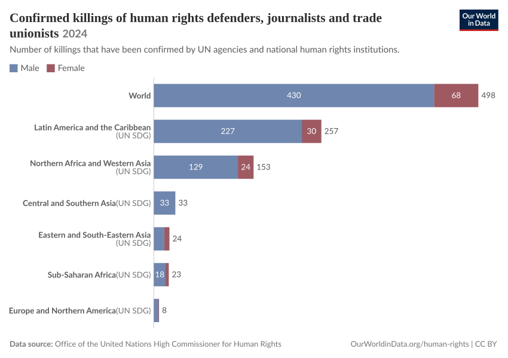
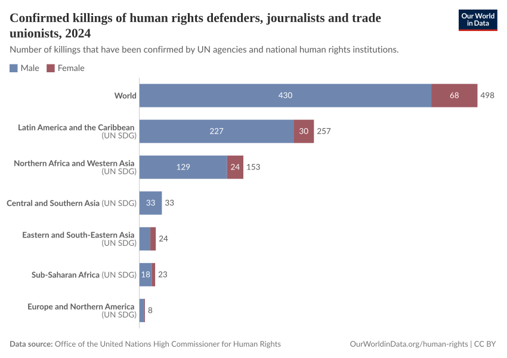
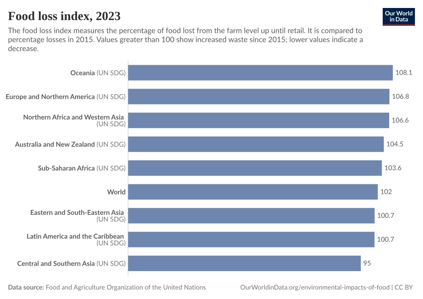
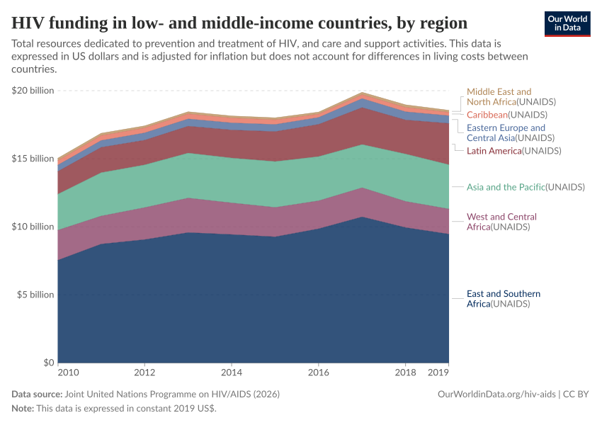
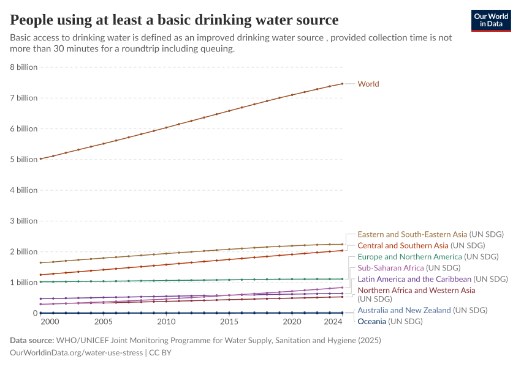

Chart Type:
All (4)
StackedDiscreteBar (1)
DiscreteBar (1)
StackedArea (1)
LineChart (1)
Showing
4
of 4 differences
cases-of-killed-human-rights-defenders-journalists-trade-unionists
Copy
Side by Side
Swipe
Code Diff (72)
Deleted

Added

global-food-loss-index
Copy
Side by Side
Swipe
Code Diff (53)
Deleted
Added

hiv-funding-by-region
Copy
Side by Side
Swipe
Code Diff (39)
Deleted

Added
people-with-access-to-at-least-basic-drinking-water
Copy
Side by Side
Swipe
Code Diff (277)
Deleted
Added
